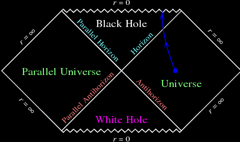

It may not seem like it, but black holes have a lot of significance in our lives.
Indirectly. Our scientists and astronomers observe them from a distance, and what they learn
changes the way we treat science and physics. The laws of the universe can be extracted from
celestial bodies, and black holes are the ultimate celestial body, containing information
of millions of years of matter.
Observing black holes can help further our understanding on laws of physics like gravity,
space and time. This is important for ideas like the theory of relativity, which is
perfect to compare to black holes, as they proved Einstein's theory correct. Observing black
holes also furhtured our understanding of how matter and time interact with gravity, how
they can bend and warp if there is a strong enough pull.
Black holes is also relevant when it comes to our technology, specifically, imaging,
computing and proccessing tech. An example of this is the Messier 87 project, or M87. Scientists
and physicists made imaging technology to capture a suppermassive black hole
with a telescope specifically made to do so. The telescope was called EHT,
Event Horizon Telescope. That telescope produced these images.
 2 sets of black hole picures, both a year apart, and each set containing an observer image, recreation, and a touch-up image.
Image and info sourced here.
from the Event Horizon Telescope's website.
2 sets of black hole picures, both a year apart, and each set containing an observer image, recreation, and a touch-up image.
Image and info sourced here.
from the Event Horizon Telescope's website.
The images on the left were taken by the telescope, the middle were made using GRMHD imaging systems
to accurately judge the energies of the black hole, and the images on the right are a recreation of the GRMHD view.
You might ask what the GRMHD is. GRMHD or General Relativistic Magnetohydrodynamics is a computing
system that observes and tracks the electricity, magnetization and the plasma content within strong
gravitaional fields. It measures them, and displays them so we can see how they work and where these
energies are the strongest. It is paramount for studying spacial phenomenons. And it would not have been
possible if we had never studied black holes. Just think of the technological advances humanity could achieve
if we understood black holes and everything about them. They have bug implications for anything physics and science
related, which has a direct correlation to our progress as a species.
Like stated above, black holes have many implications for science and physics. Not boring ones (to most) either like the
development of the GRMHD. I could tell you all about the potential progress for quantum physics and general relativity,
but that has nothing to do with you or me, so why should you care?
Black holes might be the key to informing us about concepts like time travel, light speeds, and parallel universes.
They could fast-track our progress on development on these topics, and who wouldn't gravitate to those thoughts?
The idea of parallel universes would probably be the biggest discovery in existence. The middle of the black hole,
the singularity, is something we know next to nothing about. All we do know, is that it has crushes, everything and
anything to infinite density, but where does it go? One of the laws of the universe is the conservation of mass-energy.
A law that states that nothing ever disappears, it just goes somewhere else, or turns into something else. When you
boil water, it doesn't go away, it turns into vapour, the same with energy, when a car brakes, the energy of the wheels
is transefered into heat and sound. This same concept applies to the singularity, where does all the light and matter
black holes consume go? There are also equations like the Einstein-Rosen bridge, which is essentially fancy math
that suggests that balck holes connect to something on the other side, which is where the energy consumed will go.

2 triangle shaped regions touch tip to tip, the connection is the Einstein-Rosen bridge. The squares to either side of them are the universes.
Taken from this site.
The diagram above is called a Penrose Diagram. It visualizes the cross described in the Einstein-Rosen Bridge.
Beyond each "Hole" triangle are opposing universes. Matter is sucked up through a black hole, and spit out into the
parallel universe through a white hole (essentially the opposite of a black hole). Some theorize this is how our universe
was made, because this looks awful lot like the big bang, the event that started our universe. So not only can black holes
lead to universes, but they potentially make them as well. All of that is theoretical however. One thing that isn't
theoretical are the effects of black holes on time. We know for a fact black holes, once you get closer to them, accelerate
time. That's why they take millions of years to process matter and progress. This information could assist us in time-related
tech. It might even lead to the discovery of time travel at some point, as we know that gravitaional energy equates to time manipulation.
There are plenty more reasons, but these are the biggest.
So if you care about progress at all, black holes should be something worth remembering.